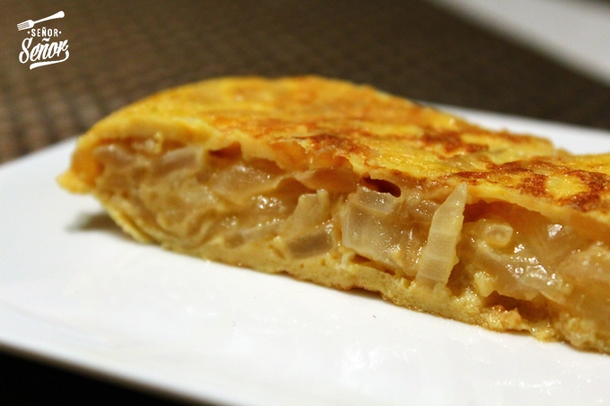

Tortilla de cebolla
Receta de tortilla de cebolla.

Ingredientes
- 2 cebollas grandes
- 2 o 3 huevos (dependiendo del tamaño, es preferible ponerle 2 y si vemos que falta agregarle otro)
- Sal
Eleaboracion (Pasos)
- Comenzamos cortando en juliana fina la cebolla. La freímos a fuego lento en una cacerola
porque seguramente en una sartén no entrará si haceis una tortilla para más gente.
- Una vez se ha pochada toda la cebolla, sin que se queme, la sacamos y la ponemos en un bol.
En ese bol la mezclamos con los huevos batidos
- La mezclamos y hacemos como si fuera una tortilla de patatas, 2-3 minutos por un lado y
luego le damos la vuelta y la terminamos.
Volver